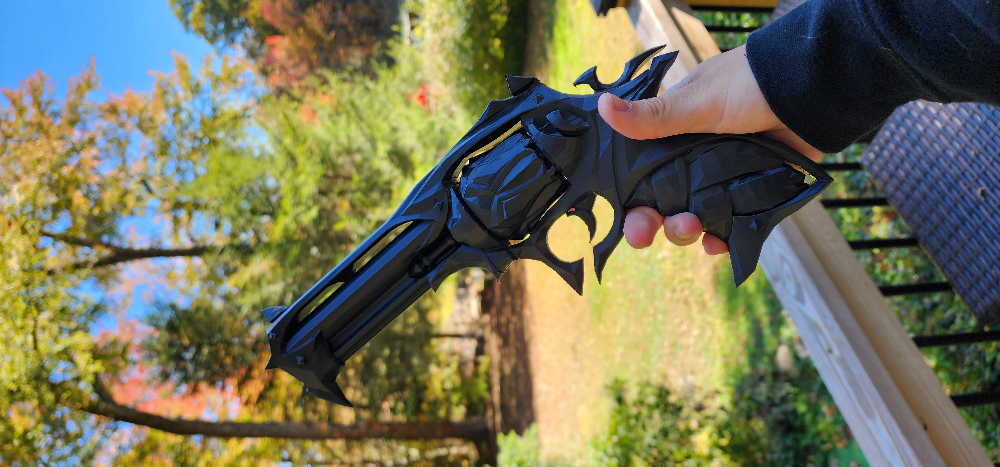
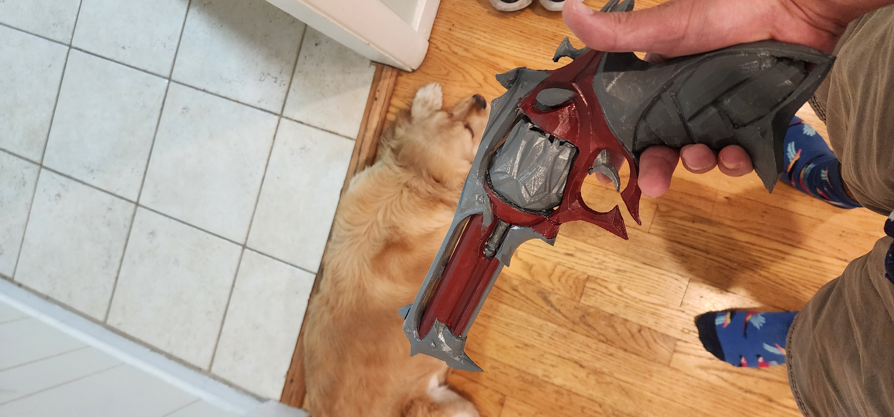
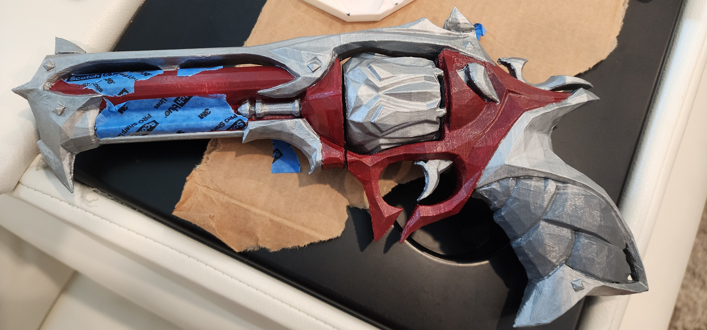
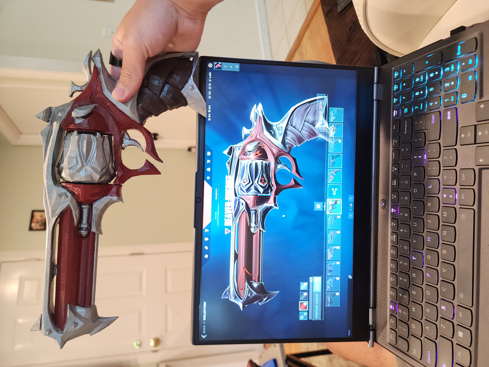

Reaver Sheriff from "VALORANT"
June 2025

The Reaver Sheriff was one of the first things I 3D printed when I first bought a Bambulab A1 Mini in May of 2024.
A year later, I decided I wanted to learn how to paint the things I print. So, my Reaver Sheriff stopped collecting dust and got some new color.
I don't even have the red varaint unlocked in the game, I just didn't feel comfortable making the purple one (I will attempt to when my skills have improved)
This model was retrieved from Slibeef on MakerWorld
Extra pictures from the design process



